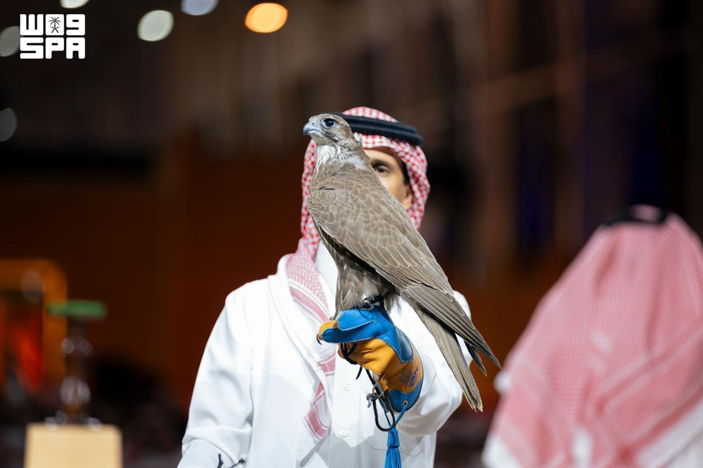
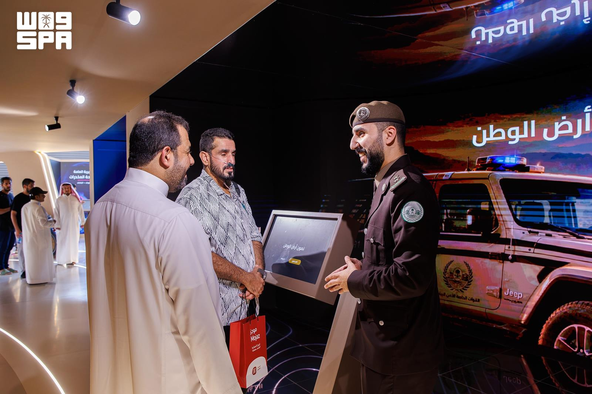
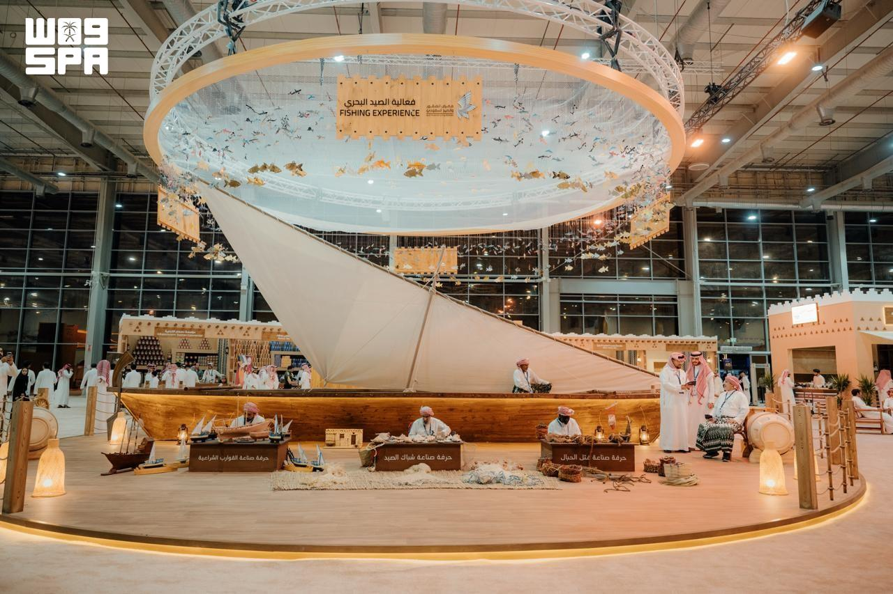

Le Salon international saoudien des faucons et de la chasse 2026, à Malham au nord de Riyad, réunit cette année fauconnerie, compétitions, enchères, équipements de chasse et de tir et technologies modernes. Son programme dépasse le cadre d’un salon traditionnel pour offrir un panorama de la chasse, de la fauconnerie et des activités qui leur sont liées.
Organisé du 1er au 10 octobre, le salon a connu ces derniers jours plusieurs événements marquants : le lancement des courses Al-Melwah, les enchères de faucons mongols et la présentation de technologies renforcées par l’intelligence artificielle pour la surveillance, le suivi et la protection.
Al-Melwah : 12 manches et 723 000 riyals de prix
Les courses Al-Melwah ont débuté dans le cadre du salon, avec des faucons qui s’affrontent pour parcourir 200 mètres le plus rapidement possible.
Cette édition comporte 12 manches réparties entre propriétaires et amateurs, d’une part, et concurrents d’élite et professionnels, d’autre part. Elle comprend six catégories de jeunes faucons : sacre, pèlerin, gerfaut pur, muthallath gerfaut pur, gyr-taba et gyr-pèlerin.
Le montant total des prix atteint 723 000 riyals saoudiens. La participation est réservée aux jeunes faucons achetés lors des Enchères internationales des élevages de faucons, reliant directement la compétition à l’élevage et à la production de faucons.
Les faucons mongols suscitent des enchères élevées

Dans une autre partie du salon, les faucons mongols ont attiré les fauconniers et les acheteurs aux enchères qui leur sont consacrées.
Une soirée a vu la vente de deux faucons pour un total de 550 000 riyals : un jeune sacre à 150 000 riyals et un sacre adulte à 400 000 riyals.
Lors d’une autre soirée, deux jeunes faucons sacres ont été vendus pour un total de 350 000 riyals, l’un à 250 000 riyals et l’autre à 100 000 riyals.
Le faucon sacre mongol intéresse particulièrement les fauconniers en raison de sa taille, de son endurance, de ses longues ailes et de la diversité de son plumage, des caractéristiques qui contribuent à sa valeur sur le marché des faucons.
L’intelligence artificielle dans la surveillance et la protection

Les évolutions présentées au salon ne se limitent pas aux faucons et aux compétitions.
Le pavillon du ministère de l’Intérieur présente des solutions numériques et des technologies renforcées par l’intelligence artificielle utilisées pour la surveillance, le suivi et l’intervention, ainsi que des technologies liées à la protection de l’environnement et à la durabilité des ressources marines.
Le pavillon informe également les visiteurs sur les règles régissant la détention et le port des armes de chasse, ainsi que sur les dispositions relatives à la pêche en mer.
Cette présence technologique témoigne d’une évolution croissante des liens entre chasse et gestion de la faune : surveillance, analyse des données et suivi occupent une place grandissante dans les outils de protection et de réglementation.
Plus de 5 000 produits

Le salon comprend aussi un vaste espace consacré aux armes, aux munitions et aux équipements de chasse et de tir, présentant plus de 5 000 produits issus de plus de 181 marques internationales.
Les produits exposés comprennent armes et accessoires, optiques, équipements et articles liés à la chasse et aux excursions en plein air.
La pêche en mer figure également au programme de l’édition 2026, avec des outils et des métiers traditionnels liés aux bateaux, aux filets et à la fabrication de cordages. Le salon élargit ainsi son champ à la chasse terrestre et à la pêche maritime, aux côtés de la fauconnerie et du tir.
Entre les courses Al-Melwah, des enchères atteignant des centaines de milliers de riyals et l’essor des équipements et des technologies modernes, le Salon international saoudien des faucons et de la chasse 2026 offre une vue d’ensemble d’un secteur associant patrimoine, industrie, commerce et technologie.